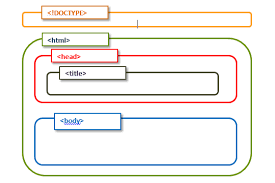

<!DOCTYPE html>
<html>
<head>
    <title>Experiment 1</title>
    <meta name="viewport" content="width=device-width, initial-scale=1.0">
    <style>
        *{
            margin-left: 2px;
        }
        .h2, .h3, .h4{
            padding: none;
            margin: 10px;
        }
        .yellow{
            border-bottom: 6px solid yellow;
            border-top: none;
        }
        .green{
            border-bottom: 6px solid green;
            border-top: none;
        }
        .heading{
            text-align: center;
            font-size: 20px;
        }
        .ol{
            font-weight: bolder;
            font-size: 15px;
            padding-left: 8px;
        }
        .ol2{
            font-weight: normal;
            font-size: 15px;
            padding-left: 8px;
        }
        .margin{
            margin: 0%;
            font-weight: bolder;
            font-size: 15px;
        }
        .margin1{
            padding: 2px;
            font-weight: bolder;
            font-size: 15px;
        }

    </style>
</head>
<body>
    <h2 class="h2">Name: Rushikesh Bandiwadekar</h2>
    <h3 class="h3">Class: TE IT</h3>
    <h4 class="h4">Roll No.:- 45</h4> 
    
    
    <hr class="yellow"> 
    <div class="heading">
        <strong>Experiment 1</strong><br>
        <b>Introduction to HTML, HTML Editor, Structure of Html</b>
    </div>
    <hr class="green">
    <b>Objectives:-</b>

    <div >
    <ol type="1" class="ol">
        <li>To know HTML Basics and HTML History</li>
        <li>To Know about HTML Basic Editors</li>
        <li>To learn basic structure of HTML</li>
        <li>To Acquire knowledge and Skills for creation of Web Site considering both client- and server-side 
            Programming.</li>
    </ol>
    </div>

    <b>CO Mapping:-</b>
    <p style="font-weight: bolder; font-size: small;">CO1: - Design a basic web site using internet programming language HTML</p>
    <p class="margin">Prerequisite: - Programming Knowledge</p>
    <p class="margin">Requirement: - - Any Updated Browser, Basic Editor (e.g Notepad, Sublime)</p>

    <hr style="border: 6px solid maroon; border-top: none;">

    <div>
        <strong>Theory</strong>
        <ol type="1" class="ol">
            <li>What is HTML</li>
            <li>HTML Editors</li>
            <li>Creating Your First HTML Webpage</li>
        </ol>
    </div>

    <hr style="border-bottom: 4px solid maroon; background-color: white; border-top: none;">

    <div>
        <strong>Program</strong><br><br>
        <b class="margin1">Write a HTML program to design basic html structure with following parameters</b>
        <p class="margin1">Title:- Basic HTML</p>
        <p class="margin1">Heading:- Website Topic Name:- Ancient Computer Science</p>
        <p class="margin1">Paragraph:- </p>
        <p style="font-weight: bolder;font-size: 15px;margin: 0px;">Description of Website</p>
        <p style="margin: 0px;">I choose any language! Many languages have been developed; like, FORTRAN, PASCAL, COBOL, C, C++, 
            JAVA SCRIPT, JAVA…etc? These languages provide me with systematic Character Sets, Command 
            Statements, Operators, Keywords…etc., using which I develop a programming code. And, you mean to 
            say that all these commands, keywords, etc. too originated from the Sanskrit language? Such a weird 
            imagination!!...</p>
        <p>Save these words, but the entire programming concept is granted by 'Sanskrit' only! The fundamentals 
            of Sanskrit originate from the remarkable sutras of Lord Shiva (Maheshwar Sutras), the Ashtadhyayi 
            grammar of Panini- a great Sanskrit grammarian, and the systematic rules of Mimansa- which, all 
            together, uphold it as the most 'scientific language'? </p>
        <p class="margin1">Computer Statements and Vedic Statements</p>
        <p>You might be aware that a computer program is a combination of many statements, which are written 
            one after another. Broadly speaking, they are of two types:</p>
        <ol type="1" class="ol">
            <li style="padding: 10px;">Executable statements</li>
            <li>Non-executable statements</li>
        </ol>
        <p>Executable statements are those which have some instruction or command inbuilt in them? Nonexecutable statements are those in which there is no command; only information is present. These are 
            used to define certain facts, to highlight or identify particulars. Those who are well acquainted with the 
            programming languages might be aware of the usage of these statements. But, have you ever read the computer programs developed by your ancestors? The Vedas are the collection of their programming 
            codes. Almost all statements of the Vedas can be divided into two categories- mantra brahmanatmakah 
            shabdrashih- 'Brahman' and 'Mantra'. The statements of Brahman category comprise of instructions and 
            commands, whereas the statements of the Mantra category do not consist of instructions- they hold 
            varied information. Hence, the first category forms the 'Executable Statements', while the other makes 
            the 'Non-executable Statements'. The various Vedic statements under these two categories:</p>
        <p><b>1. Injunction Statements (vidhi vakya)-</b> through these, open instructions are discharged? For example, 
            satyam vada- Speak the truth, dharmam chara- Act righteously. You can clearly comprehend that these 
            are Executable statements.</p>
        <p><b>2. Sacrificial Statements (mantra vakya)- </b> these are those Vedic Statements which contain direct or 
            indirect information. For instance, agnimeekay purohitam; in this statement, a priest is only reminded of 
            a fire-related ritual.</p>
        <p>Thus, you can distinctly make out that it is a Non-executable statement. Likewise, 
            there are many other Vedic Statements which come under the afore-mentioned two categories. On the 
            same ground, various other concepts of modern computer science, like Keywords, Operators, Programs, 
            Sub-programs, Time-sharing, Password, etc. can be found in and tallied with the Vedas, the ancient 
            computer science texts.</p>

    </div>
    <hr style="border-bottom: 4px solid maroon; background-color: white; border-top: none;">
    <b>Output</b><br><bR>
    
    <hr style="border-bottom: 4px solid maroon; background-color: white; border-top: none;">
    <b>Result</b>
    <p class="margin1">Hence we studied Introduction to HTML, HTML Editor and implemented Structure of HTML.</p>
    <hr style="border-bottom: 4px solid maroon; background-color: white; border-top: none;">
    <b>Post Lab Assignment/Experiment</b>
    <ol type="1" class="ol2">
        <li>Discuss about any other three edditor IDE used for Web Development.</li>
        <li>List out the Client Side Programming Languages and Describe in short.</li>
        <li>Expalin History of HTML and web Programming</li>
    </ol>
</body>
</html>